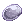
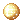
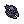

Creation Database
Genetic Creation
Potion Creation (Pharmacy)
 Pharmacy Is a 2nd class active skill available as Alchemist.
Pharmacy Is a 2nd class active skill available as Alchemist.
Formula
|
|
|


Brewing Rate = [(PreparePotion_Lv × 3) + (PotionResearch_Lv) + (InstructionChange_Lv) + (JobLv × 0.2) + (DEX × 0.1) + (LUK × 0.1) + (INT × 0.05) + Potion_Rate]%
Potion Rate Potion +15% ~ +25% Red Potion, Yellow Potion, White Potion +5% ~ +15% Alcohol -5% ~ +5% Acid Bottle, Marine Sphere Bottle, Bottle Grenade, Plant Bottle -5% Blue Potion, Anodyne, Aloevera, Embryo, Elemental Potions, Condensed Red Potion, Homunculus Supplement -10% ~ -5% Condensed Yellow Potion -15% ~ -5% Condensed White Potion, Glistening Coat
Potion Materials
Manuals are items needed to create potions. They can be purchased from the Guild Dealer in Al de Baran, except for the  Elemental Potion Creation Guide, which is obtained through a quest. Basic materials can be bought from Alchemy Supplies and Tool Dealer. Also, remember that you must to have
Elemental Potion Creation Guide, which is obtained through a quest. Basic materials can be bought from Alchemy Supplies and Tool Dealer. Also, remember that you must to have  Bioethics already learned if you want to craft
Bioethics already learned if you want to craft  Homunculus Supplement.
Homunculus Supplement.


Fame System
For Brewers there is a system in which players are ranked based on who can create the most potions.
- Rank Point +1: 3 Condensed Potions created without failure in a row.
- Rank Point +3: 5 Condensed Potions created without failure in a row.
- Rank Point +10: 7 Condensed Potions created without failure in a row.
- Rank Point +50: 10 Condensed Potions created without failure in a row.
Alchemist ranks can be checked via usage of the /alchemist command ingame. Potions made by an Alchemist class player who is in the top 10 list will receive a 50% bonus to their efficiency. This does not apply to potions used through  Potion Pitcher or
Potion Pitcher or  Slim Potion Pitcher.
Slim Potion Pitcher.
Item Look & Feel
- When a potion is brewed successfully, its name will have the brewer's name attached.
- Normally the brewer's name will appear in blue. However, if the character that brewed the item has been deleted, the brewer's name is lost, and their items become Nameless.
Special Pharmacy
 Special Pharmacy Is a 3rd class active skill available as Genetic.
Special Pharmacy Is a 3rd class active skill available as Genetic.
Success Rate Formula
Success Rate compares two values: Creation and Difficulty.
Creation = INT + (DEX ÷ 2) + LUK + Job_Lv + Random[30, 150] + (Base_Lv − 100) + ({Potion_Research_Lv × 5|Lv1 ~ Lv10 = 5 ~ 50}) + ({{Full_Chemical_Protection_Lv × Random[4, 10]|Lv1 ~ Lv5 = 4 ~ 50}}) Difficulty = Specific_Value + Item_Rate
For High Level:
- If Creation > Difficulty by at least 400, creates the maximum number of potions allowed.
- If Creation > Difficulty by at least 300, creates 3 potions below the maximum allowed.
- If Creation > Difficulty by at least 100, creates 4 potions below the maximum allowed.
- If Creation > Difficulty by at least 1, creates 5 potions below the maximum allowed.
- If Creation < Difficulty, creates 6 potions below the maximum allowed.
Item Rates are unknown.
Item Creation


Notes
- All required books for genetics crafts can be bought from Craft Book Merchant in Al de Baran, and other basic materials from Alchemy Supplies and Tool Dealer.
Mixed Cooking
Mixed Cooking is a 3rd class active skill available as Geneticist.
Effect
Prepares delicious dishes by mixing various ingredients. These dishes boost a Primary Stat by 20 for 5 minutes. Requires the user to have the  Cooking Book: Mix Cooking book in the inventory.
Cooking Book: Mix Cooking book in the inventory.
Success Rate
Success Rate compares two values: Creation and Difficulty. If Creation results higher than Difficulty, dishes are successfully prepared, otherwise the cooking fails.
Creation = (Job_Lv ÷ 4) + (DEX ÷ 3) + (LUK ÷ 2) Difficulty = Random(30, 150) + Item_Rate
For Level 2:
- If Creation > Difficulty by at least 30, 10~12 dishes are prepared.
- If Creation > Difficulty by at least 10, 10 dishes are prepared.
- If Creation < Difficulty by exactly 10, 8 dishes are prepared.
- If Creation < Difficulty by at least 30, 5 dishes are prepared.
- If Creation < Difficulty by at least 50, the cooking fails.
Item Rates are unknown.
Recipes


Notes
- Pots,
 Cooking Skewer,
Cooking Skewer,  Black Charcoal, Cool Gravy,
Black Charcoal, Cool Gravy,  Fine Noodle and Comodo Tropical Fruit can be bought from Alchemy Supplies .
Fine Noodle and Comodo Tropical Fruit can be bought from Alchemy Supplies .
Rune Knight
Rune Mastery is a 3rd class passive skill available as Rune Knight.
Effect
Enables Rune Knights to craft special consumable runes used to cast special skills similar to Magic Scrolls. Higher skill levels increase success rate, craftable runes, the maximum number of runes able to be gained from a single ore and the activation chance (see below). The higher grade of Runestone used, the higher the chance of success.
| Level | Base Success Rate |
|---|---|
| 1 | 32% |
| 2 | 34% |
| 3 | 36% |
| 4 | 38% |
| 5 | 40% |
| 6 | 42% |
| 7 | 44% |
| 8 | 46% |
| 9 | 48% |
| 10 | 50% |
- BaseSucessRate = (30 + 2 × Rune Mastery Skill Lv)%
- StatBonus = [(LUK + Job Lv) ÷ 10 + DEX ÷ 30]%
Rune Crafting
- To craft a rune, double click on the Rough Runestone, select the rune you wish to craft from the list, then click okay. You do not need to drag the materials to the creation prompt.
Rough Runestone Bonuses
| Runestone Grade | Success Rate |
|---|---|
| General | +2% |
 Quality Quality
|
+5% |
 Rare Rare
|
+8% |
|  Ancient | +11% |
 Mystic Mystic
|
+14% |
Rune Ranks
| Rank | Success Rate |
|---|---|
| Rhydo, Turisus, Halagas and Asir | -5% |
| Isia and Pertz | -10% |
| Lux Anima, Nosiege and Urj | -15% |
| Verkana | -20% |
Rune Materials
- Level 1~4 allows to produce 2 Runestone.
- Level 5~9 allows to produce 2~4 Runestones.
- Level 10 allows to produce 2~6 Runestones.


Notes
- All Rough Runestones,
 Gold,
Gold,  Elder Branch and
Elder Branch and  Light Granule can be bought from Rune Seller . Players selling stores usually offer cheaper prices than Rune Seller.
Light Granule can be bought from Rune Seller . Players selling stores usually offer cheaper prices than Rune Seller.
Guillotine Cross
To create  Poison Bottle, use the skill
Poison Bottle, use the skill  Create Deadly Poison. The formula for crafting is: [Success Rate = 20% + (0.4% * Dex) + (0.2% * Luk)]. Setting your DEX and LUK to 130 each will give you 98% chance crafting rate. I strongly recommend using a Priest for bless+gloria, reaching 100% success, and a bard for
Create Deadly Poison. The formula for crafting is: [Success Rate = 20% + (0.4% * Dex) + (0.2% * Luk)]. Setting your DEX and LUK to 130 each will give you 98% chance crafting rate. I strongly recommend using a Priest for bless+gloria, reaching 100% success, and a bard for  A Poem of Bragi. Bragi will reduce skill delay to increase the crafting speed (use Create Deadly Poison on turbo). If possible, use gears to reduce skill delay even further to craft faster (i.e.:
A Poem of Bragi. Bragi will reduce skill delay to increase the crafting speed (use Create Deadly Poison on turbo). If possible, use gears to reduce skill delay even further to craft faster (i.e.:  Heart Wing Headband [EVT [1]],
Heart Wing Headband [EVT [1]],  New Wave Sunglasses,
New Wave Sunglasses,  +11 Bolt Crusher[2]).
+11 Bolt Crusher[2]).  Poisoning Weapon with
Poisoning Weapon with  Magic Mushroom also reduces skill delay.
Magic Mushroom also reduces skill delay.
For the GX poisons, use  Create New Poison. The success rate is influenced by dex and luk.
Create New Poison. The success rate is influenced by dex and luk.


Notes
 Poison Kit and every Poison Herb can be bought from Thief Supplies ,
Poison Kit and every Poison Herb can be bought from Thief Supplies ,  Medicine Bowl from Alchemy Supplies ,
Medicine Bowl from Alchemy Supplies ,  Empty Bottle and
Empty Bottle and  Berserk Potion from any Tool Dealer.
Berserk Potion from any Tool Dealer.
Sorcerer
Sorcerers can convert elemental stones using the skill  4 Elemental Analysis. The success rate of the skill is 100% for level 1 and 90% for level 2. Be careful with level 2 batch craft, if you fail all materials will be lost in the process.
4 Elemental Analysis. The success rate of the skill is 100% for level 1 and 90% for level 2. Be careful with level 2 batch craft, if you fail all materials will be lost in the process.
| Level | 4 Elemental Analysis | Materials | ||||||
|---|---|---|---|---|---|---|---|---|
| 1 |  2~5 Red Blood 2~5 Red Blood
|
 1 Flame Heart 1 Flame Heart
| ||||||
| 2~5 Crystal Blue |  1 Mystic Frozen 1 Mystic Frozen
| |||||||
|  2~5 Wind of Verdure |  1 Rough Wind 1 Rough Wind
| |||||||
 2~5 Green Live 2~5 Green Live
|
1 Great Nature | |||||||
| 2 | Flame Heart
|
10 Red Blood
| ||||||
| Mystic Frozen
|
10 Crystal Blue | |||||||
| Rough Wind
|
10 Wind of Verdure | |||||||
| Great Nature | 10 Green Live
| |||||||
Sages can craft elemental converters using the skill  Create Elemental Converter. This skill can only craft converters using the new recipes. The NPC Master of Elements can be used to craft the elemental converters for both new and old recipes, including holy and poison elemental converters, charging 500z per conveter besides the necessary materials. The Master of Elements also sells discountable
Create Elemental Converter. This skill can only craft converters using the new recipes. The NPC Master of Elements can be used to craft the elemental converters for both new and old recipes, including holy and poison elemental converters, charging 500z per conveter besides the necessary materials. The Master of Elements also sells discountable  Blank Scroll. There is no chance to fail when crafting Elemental Converters.
Blank Scroll. There is no chance to fail when crafting Elemental Converters.
| Elemental Converter | Materials (New Recipe) | Materials (Old Recipe) | ||
|---|---|---|---|---|
 Water Elemental Converter Water Elemental Converter
|
1 Blank Scroll
|
1 Crystal Blue | 1 Blank Scroll
|
 3 Snail's Shell 3 Snail's Shell
|
 Fire Elemental Converter Fire Elemental Converter
|
1 Red Blood
|
 3 Scorpion Tail 3 Scorpion Tail
| ||
 Earth Elemental Converter Earth Elemental Converter
|
1 Green Live
|
 3 Horn 3 Horn
| ||
 Wind Elemental Converter Wind Elemental Converter
|
1 Wind of Verdure |  3 Rainbow Shell | ||
 Holy Elemental Converter Holy Elemental Converter
|
- |  3 Horn of Hillslion 3 Horn of Hillslion
| ||
| Poison Elemental Converter | - |  3 Withered Flower 3 Withered Flower
| ||
Notes
 Cursed Water endows weapon with shadow property.
Cursed Water endows weapon with shadow property.
Creation Videos
Genetic
By Lu7ky (Lucky)
- High success rate (Condensed White Potion and Acid Demonstration Bottles)
- Fruit Bomb Creation (No longer possible)
Mechanic
By Lu7ky (Lucky)
Guillotine Cross
By Lu7ky (Lucky)